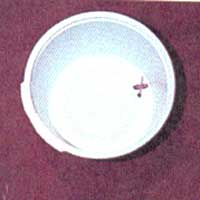

How To Make A Self-Watering Seed Starter In Ten Minutes
Getting plants started healthy, including tools and materials list, instructions, pictures.
by Beulah Hooper
October/November 1995
You stride into the kitchen and march straight to that infamous “catch-all” cupboard-you know the one. It catches all the items you don’t know where else to put, yet think you’ll find a use for someday. Now it’s cleaning day.
You've resolved to throw away all those bits of string, all those jelly and mayonnaise jars, and especially all those plastic food containers you've carefully washed. You gather 48 cottage cheese cartons, 12 whipped topping packages, and 24 margarine tubs, and head for the garbage can. Just as you open the can to drop in your load, you remember that each year in the United States we toss 13 billion pounds of plastic into our garbage cans.
Now you're caught between your desire to maintain an orderly home and your urge to help alleviate our national waste problem. What can you do with all those plastic containers?
Reuse them. Look at them closely and let your ingenuity simmer. Sure, a few can serve as refrigerator storage for leftovers and hardware bins for nails and small tools, but what can you do with the remainder? Well, with minor alterations taking less than 10 minutes, you can make a self-watering seed starter that can be placed on a window sill or on a counter to propagate small amounts of seeds. The instructions below make use of simple tools and materials costing just a few cents. You will need just the following items to begin:
TOOLS & MATERIALS
(1) a block of scrap wood-perhaps a piece of 2 x 6 lumber four to six inches long-to protect your work surface when you are cutting plastic
(2) a sharp knife
(3) a 6-inch or 12-inch ruler
(4) a pencil compass for measuring and drawing circles
(5) a ball-point pen or pencil
(6) one plastic 16-ounce cottage cheese or margarine container
(7) one plastic 12-ounce whipped topping container with lid
(8) one full-length strand from a cotton string mop
STEP TWO: Insert the mop strand into the soil tub. From the inside of the tub, push one end of the strand of cotton string mop into the X you just cut in the container. The eraser end of a pencil works well as a pusher. From underneath the tub, pull the strand through until there is just enough left inside to coil it once around the perimeter of the bottom of the tub. You will have a long tail of mop strand dangling from the bottom of the soil tub, which serves as the wick in your self-waterer.
STEP THREE: Follow these instructions to cut a hole in the center of the larger container lid-the water reservoir: (1) Measure the diameter of the bottom of the soil container and add a quarter inch to that measurement. (2) Divide the above measurement in half and set that amount on the pencil compass. (3) Locate the raised bump at the center of the lid for the larger container and place the sharp point of the compass on it. (4) Mark the circle with the pencil leg of the compass, watching that the compass point stays exactly on center. (5) Cut through the lid with a sharp knife (over the wood block), following the pencil mark closely. (6) Remove the circle of plastic and place the modified lid on the larger container. The water reservoir is now complete.
STEP FOUR: Prepare your completed self-watering seed starter for use: (1) Add approximately one inch of water to the bottom container. (2) Place potting soil in the top container and sprinkle the surface lightly with water. (3) Assemble your seed starter by placing the soil tub firmly into the hole in the lid of the water reservoir. Tuck the wick inside and see that it touches the bottom of the water reservoir. Check the water level so that it does not touch the soil container, and you are ready to plant!. Set the seed starter in a sunny place and wait for the seedlings to appear.
After the initial sprinkling of the soil, no watering of the surface should be necessary if you replenish the water in the bottom tub when needed. You can adjust the amount of moisture to the plants by placing more or less mop strand in the soil tub. Now that you've made a seed starter and discovered how easy it is, go ahead and make a dozen more with the rest of those plastic containers. If you wish to, you may paint your seed starters with a white latex paint so they will stay usable for several years. At the end of a season, you can take them apart and stack them with your gardening equipment. Five-gallon pails used as water reservoirs and smaller ones for the soil tubs work well for permanent plantings such as tomatoes or flowers for a small patio or porch. Ten minutes of work and you may never come home to another desiccated plant again!
Fall Planting:
The Welsh Onion
Allium fistulosum, also called multiplier onion, scallion, and bunching onion.
Range: Entire U.S.
Appearance: Multiplier onions do just that-they multiply at the base, forming more stems and small onions. They never form large bulbs as conventional onions do. The base and any section of underground stem is white. Stems and leaves are green and hollow, growing from 6 to 24 inches long.
Planting: This perennial is grown from seed and will form its own seed heads in its second year. Sow in the fall for an early spring treat or in the spring for summer harvest. Use good, loose soil and give it a generous dose of your best crumbly compost or well-aged manure. Plant seeds one-fourth to one-half inch deep. It's better to grow them in a group in one place rather than tucked into various garden nooks as you might with garlic or bulb onions.
Culture: Welsh onions are easy to grow. They re-seed themselves, grow in almost any soil, and have only average water requirements. After four or five months, the bulbs will start multiplying. If green tops are your prize, all's well as is. But if you prefer long, white base stems, then dig up the onions and replant them in six- to eight-inch-deep trenches. Fill these in and wait for the blanched stems to grow.
Every three or four years, divide the patch and spread it out.
Harvest: You can begin harvesting in two months, even if the variety you're growing takes twice that long to mature. Simply scoop some soil away from the ones you're after and gently pull the ones you want with one hand while holding down the rest of the bunch with the other.
Welsh onions keep much better in the ground than in a refrigerator, so pull only what you need. They will even overwinter in the garden if your weather is not too severe and you mulch them well. In extremely cold areas, bring them indoors or transplant them to a greenhouse, cold frame, or hot bed. You can replant come spring and let them start multiplying all over again.
|
COURTESY OF GURNEY SEED & NURSERY 1 Smaller plastic container for soil, marked for cutting |
2 Mop strand for wick extending from bottom of soil tub. |
3 Lid from larger container for water, with center cut out. |
|
 4 Mop strand for wick coiled inside perimeter of soil tub. |
5 Soil tub and water tub ready for assembly |
6 Soil tub set into reservoir lid. |
|
Optional assembly: five gallon pail for water reservior with five quart soil tub pail used as permanent planter for tomato |
Welsh Onion |
|
|
|
|
 |